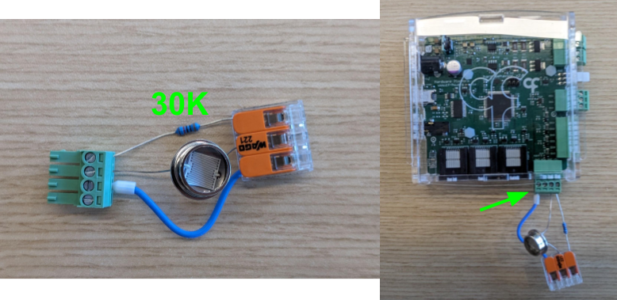

Parsing AnalogData Event messages
Build the following circuit before start:

In a previous exampled we mentioned referred to AnalogData as a high-frequency event that carries the ADC readings. It is important to note that, as opposed to FirmwareVersionHigh which belongs to the core registers common across all Harp devices, AnalogData is a Harp Behavior specific register. As result, we must use the Harp.Behavior package to parse this register:
- Subscribe to the
BehaviorEventsstream. - Add a
Parse(Harp.Behavior)operator - Set
RegistertoAnalogData - The output type of
Parsewill now change to a structure with the fields packed in this register. - To select the data from channel 0, right-click on the
Parseoperator and selectAnalogInput0. - Run Bonsai and check the output of the
AnalogInput0stream by double-clicking the node.
You will notice that despite the timestamp being present in the message, the AnalogInput0 output stream is not timestamped. This is because the Parse operator does not propagate the timestamp from the original message by default. In cases where the timestamp is necessary, for each <Payload> we have a corresponding Timestamped<Payload> that can be selected in all Parse operators. This will add an extra field to the parsed structure, Seconds, that contains the timestamp of the original message (in seconds):
- Modify the
Registerproperty toTimestampedAnalogData - Select the
AnalogInput0andSecondsmembers from the output structure. - Optionally pair the elements into a
Tupleusing theZipoperator.